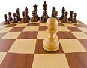

Actividades
Fútbol
Mas allá de jugar desde niño a la pelota, hace unos años cree un equipo de futbol llamado "La siciliana". El equipo debutó hace 5 años, juega dos torneos actualmente, uno de futbol 8 y otro futbol 11. Tiene dos titulos hasta el dia de hoy.
Ajedrez
Mi madre me enseño a jugar ajedrez desde niño. A los 15 años ya podia jugar partidas complejas con grandes jugadores. A los 23 años llegue a tener 2300 de elo. Aunque no pude llegar a ser Gran Maestro, el ajedrez me sigue apasionando como de chico
Cocina

Al ser una persona muy solitaria, cuando me independicé a los 18 años, me volqué hacia la cocina, encontrando ahi espacio y tiempo para estar a solas y meditar. Aunque tengo una buena mano para cocinar, todavia sigo aprendiendo.. Tengo un curso hecho en sabores mediterraneos jaja!